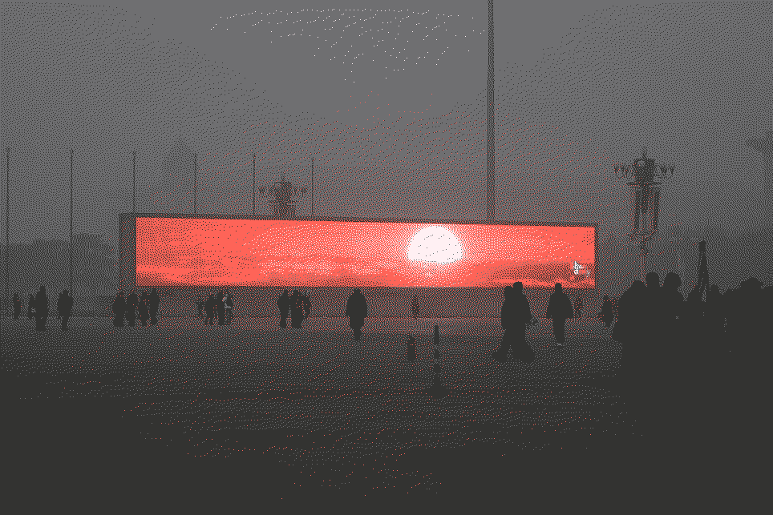

Pollution

Like a man who has been dying for many days, a man in your city is numb to the stench.
Chief Si'ahl
Pollution is the introduction of contaminants into the natural environment that cause adverse change. It comes not only in the form of chemicals but rather it can be almost anything. Air pollution, electromagnetic, light, litter, noise, chemical, radioactive, visual, thermal, medial, water, material, mental, physical, etc. We live in an increasingly polluted world where no place is left clean.
Pollution is defilement and desacration.
Outgoing connections:
- Acceleration - Despite all our efforts we haven't even been able to slow down the increase rate of pollution.
- Access to food - Pollution makes the growing of food more difficult in certain areas and also have an impact on the food grown.
- Access to water - No water on Earth is saved from anthropogenic pollution. None.
- Advertising - Advertising is sensory pollution.
- Algorithmic curation - Algorithmic curation is information pollution.
- Artificial Intelligence - More and more of our information sources are polluted with generated content by artificial intelligence systems.
- Attention hijacking - Attention pollution.
- Biodiversity loss - Pollution kills.
- Breakdown of information infrastructure - Just as you shouldn't drink from a polluted river you shouldn't trust polluted information sources.
- Catastrophic risks - Don't worry about me, I love suckin' on exhaust pipes.
- Climate change - Pollution is the main direct driver of climate change.
- Democracy failing - Politics is polluted as well. Nothing is clean. Polluted with what, you ask? Well, how much of politics is about true welfare of citizens? I'd argue almost none.
- Disinformation - Deliberate pollution of information.
- Ecological crisis - Pollution impacts and harms all ecosystems.
- Electric vehicle solutions - If pollution from certain gases from the combustion engine is the problem then surely electric engines are the solution?
- Extreme weather - Pollution has complex interactions with weather systems.
- Failure to take responsibility - We are completely and utterly failing at every single fucking front to take responsibility for our pollution.
- Greenwashing - Oh, so you're saying the problem for our business isn't the actual pollution but the appearance of pollution? Well, nice, we can do something about that. I'll add it to the next sprint.
- Hemispherical asymmetry (Earth) - When it's our children swimming in rivers streaked with bleaching chemicals we might even start to care. Might.
- Hyperstimuli - Our minds are constantly polluted with streams of cornless shit.
- Ignored externalities - Pollution might be one of our most obvious ignored externalities of industry.
- Inertia - If we halted all pollution immediately it would still have potentially detrimental consequences for centuries or even millenia.
- Insect loss - Pollution kills insects.
- Lack of dark spaces - Light pollution is very real. Not just for bats, for us too.
- Lack of quiet spaces - Sound pollution. Not good. It's a great record store though.
- Lack of the longterm - Our future looks increasingly bleak, in fact, there doesn't seem to be a future for us at all if pollution isn't addressed.
- Lack of time - We should've done something about pollution centuries ago.
- Limits to growth - Pollution is a limit to growth.
- Malnutrition - Pollution gets everywhere, including in our food.
- Mental health - There are more and less obvious ways in which pollution deteriorates mental health. The most obvious example is that air pollution seems to increase risk of and severity of depression.
- Microplastics - Microplastics make up a highly problematic class of pollution.
- Migration - Certain places have become so polluted that it discourages human habitation.
- Misinformation - Non-deliberate pollution of information.
- Mistreatment of animals - Pollution negatively impacts every animal on Earth.
- Mistreatment of other humans - Pollution negatively impacts every human on Earth.
- News - News is mostly nothing but a polluted river of sewage water.
- Ocean acidification - Pollution acidifies oceans.
- Over-reliance on technology - Hey, you, chill out, we're working on a drone that can capture fat-soluble particulate matter. We've designed it to look like a seagull and we're calling it Gullible. We're meeting with a VC on Thursday to discuss the seed round.
- Planetary boundaries - We've far exceeded the planetary boundary for pollution.
- Poisoning the water, the earth, the air - Pollution is poison.
- Profit - Huh, would you have a look at that graph, Lenny? As pollution goes up, so does profit. Hey, I wonder...
- Propaganda - Propaganda is the spreading of informational pollution.
- Quantification - If we could just measure all the pollution we could probably figure out where the problem lies...
- Signal-to-noise ratio - Noise is pollution. There's barely any signal left. Don't get me wrong though, Merzbow is all signal.
- Social media - How much of a certain flow has to consist of what we call pollution for it to no longer be pollution? Pour a barrel of shit into a river and you've polluted the river but if you just swim in a river of shit, surely that's fine?
- Solutionism - Pollutionism?
- The desacration of all places - No place is left unscathed.
- The minimisation of all things wild - All wilderness is polluted.
- Tipping points - How much can we pollute before we're forced to stop?
- Traffic noise - Sorry, what was that?!
- Unheeded warnings - We've known about the problems of pollution for a long, long time.
- Waste - Pollution and waste go hand in hand.
- Yuppie dystopia - Aaah, can you smell it? No? The glorious fumes of never-ending growth. You gotta love it. Anyway, gotta hop back into another Zoom meeting.